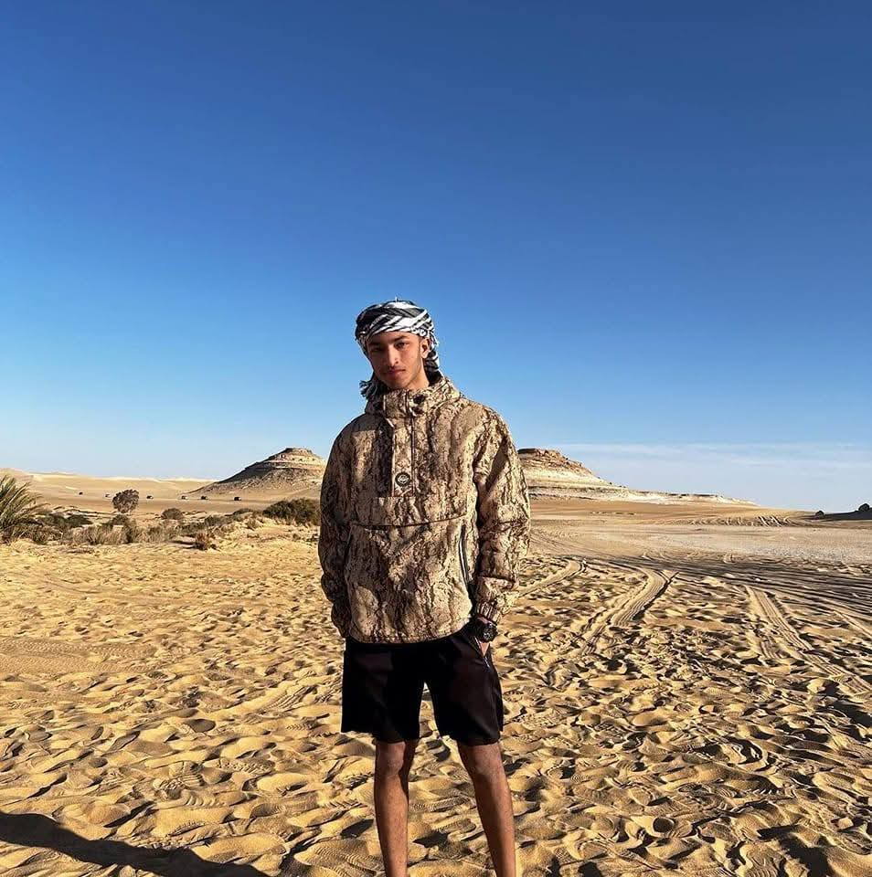
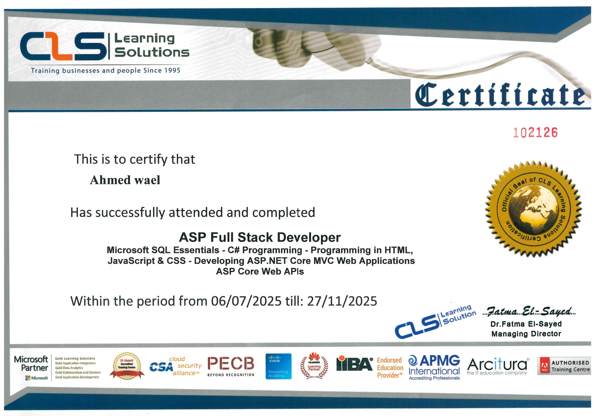
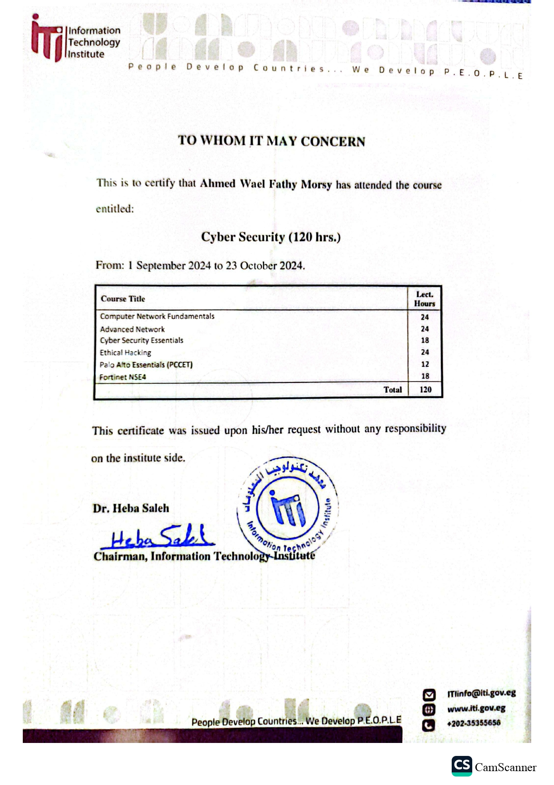

DevOps engineer passionate about automation, cloud infrastructure, CI/CD pipelines, and building scalable systems. Bridging development and operations.

I am a DevOps-oriented engineer with a strong foundation in Full Stack .NET development and cloud-native technologies. My passion lies in automating workflows, building reliable infrastructure, and improving system performance.
I have hands-on experience with Docker, Git, Linux, CI/CD pipelines, and cloud fundamentals. I focus on writing clean code, designing scalable architectures, and ensuring seamless deployments.
My goal is to contribute to innovative tech teams where I can optimize infrastructure, enhance automation processes, and continuously grow as a DevOps professional.
Fayoum University (FCAI) — Cairo, Egypt
Studying computer science fundamentals, AI, software engineering, and systems design with a focus on DevOps and cloud technologies.
Digital Egypt Pioneers Initiative (DEPI)
Built a fully automated deployment pipeline using Jenkins and Docker. Integrated Git webhooks for automatic triggering, containerized app stages, and environment-specific deployments.
Developed a scalable web application using ASP.NET Core MVC with REST APIs, Entity Framework Core, and SQL Server. Implemented authentication, CRUD operations, and database optimization.
Completed 120+ hours of hands-on cybersecurity training covering ethical hacking fundamentals, network security, and penetration testing methodologies aligned with Fortinet NSE4 and PCCET.
Docker
Linux CLI
Git / GitHub
AWS
Azure
CI/CD
Jenkins
GitLab CI
C#
ASP.NET Core
MVC
Web APIs
Entity Framework Core
JWT Auth
Repository Pattern
Dependency Injection
SQL Server
LINQ
Clean Architecture
Middleware
HTML
CSS
JavaScript
Ethical Hacking Fundamentals, PCCET, Fortinet NSE4
ITIC#, ASP.NET Core MVC / Web APIs, HTML, CSS, JavaScript
CLS Learning SolutionsDatabase Design & Optimization
CLS Learning SolutionsCI/CD, Docker, Jenkins, Cloud, System Observability
Digital Egypt Pioneers Initiative (DEPI)

I'm currently open to entry-level DevOps and Cloud opportunities. Feel free to reach out!